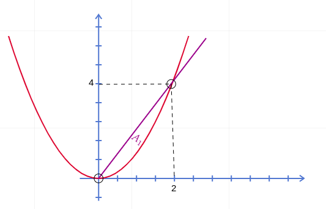

- The region we calculate volume along can either be rectangular or non-rectangular.
- In a rectangular case, we'd have:
\[\int_R\int f(x,y) \cdot dx \cdot dy \text{ for } R=\{(x,y): a \leq x \leq b, c \leq y \leq d\}\]
- Setting up this integral is simple,
\[\int_c^d \int_a^b f(x,y) \cdot dx \cdot dy\]
- Or, changing the order of \(dx\) and \(dy\),
\[\int_a^b \int_c^d f(x,y) \cdot dy \cdot dx\]
- Take a region bounded by \(y=x^2\) and \(y=2x\). If we want to find the volume of a surface confined to the area of intersection of these regions.
- First, we have to plot out these two functions:

- We get two points of intersections: \((2,4)\) and \((0,0)\).
- To evaluate the volume within this area from a surface, we have to set up the double integral as:
\[\int_0^2\int_{y=x^2}^{y=2x} f(x,y) \cdot dy \cdot dx\]
- Or in terms of \(x\),
\[\int_{0}^4 \int_{x=\frac{1}{2}y}^{x=\sqrt{y}} f(x,y) \cdot dx \cdot dy\]
- The order of limits here matter as when we observe from the \(x\) axis, we'll have to take the left-most equation as the lower limit and right-most as the upper limit. And for the \(y\) axis, we have to take the bottom-most equation (within the intersecting region) as the lower limit and the upper-most as the upper limit.